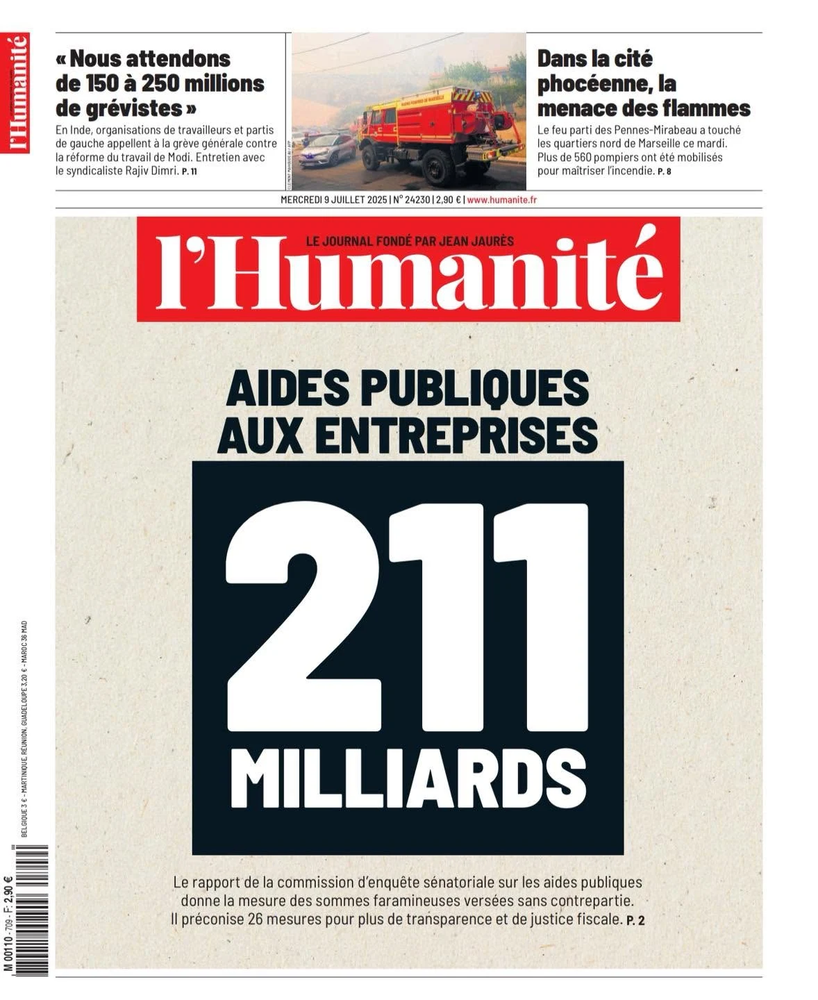

Actualité parlementaire
Aides publiques aux entreprises. Fabien Gay détaille les 211 milliards du rapport
Date de mise à jour indiquée par Facebook · 9 juillet 2025
Repères éditoriaux
Fabien Gay détaille l’estimation de la commission d’enquête pour 2023. Elle comprend des aides budgétaires, des dépenses fiscales et des allègements de cotisations sociales. Le rapport du Sénat en précise le périmètre.
Texte de la publication · Fabien Gay
211 milliards d’euros.
Dont 48 milliards de dépenses budgétaires et subventions directes.
Dont 88 milliards de dépenses fiscales.
Dont 75 milliards d’exonérations et allègements de cotisations sociales patronales.
1er budget de l’Etat.
Maintenant vous savez !

Sources
Fabien Gay · publication relayée par le PCF 79 · bibliothèque Facebook · AR-0002-FB-01073
À lire aussi · Aides publiques aux entreprises. Les conclusions de la commission d’enquête du Sénat